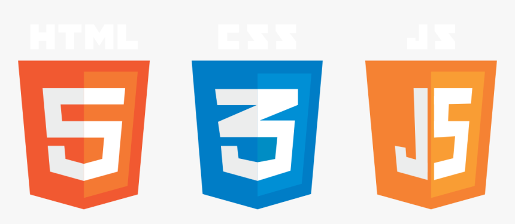
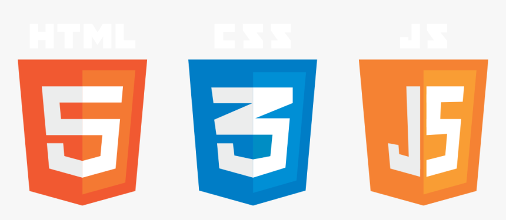

DESAROLLO Y DISEÑO WEB
PREMIUM
-
-
¿Que lenguajes usamos?

-
¿Por que elegirnos?
Solución Integral
Através de LeanzaDex le proveemos las soluciones necesarias en todos los pasos del proceso, para que pueda tener resultado sin perder tiempo. Nuestra amplia gama de servicios referidos a internet, permiten que Ud. pueda despreocuparse desde la registración de dominios hasta el desarrollo, mantenimiento y estrategias de marketing digital de su empresa.
-

-
¿Que lenguajes usamos?
 -
¿Por que elegirnos?
Solución Integral
Através de LeanzaDex le proveemos las soluciones necesarias en todos los pasos del proceso, para que pueda tener resultado sin perder tiempo. Nuestra amplia gama de servicios referidos a internet, permiten que Ud. pueda despreocuparse desde la registración de dominios hasta el desarrollo, mantenimiento y estrategias de marketing digital de su empresa.
-
LeanzaDex DISEÑO Y DESAROLLO WEB
En LeanzaDex brindamos servicio de diseño web premium. Desarrollamos páginas web de alto impacto apuntadas a maximizar resultados. Somos especialistas en generar soluciones a medida y diseño personalizado para cada cliente.Nuestra mision NOS MOTIVA, MOVILIZA E IMPULSA. "Realmente creemos que con una estrategia web correcta, comunicación acertada y diseño creativo, tu empresa puede sacar un provecho de internet MUY superior al que imaginas posible."
Y QUEREMOS AYUDARTE A LOGRARLO.Diseños de Pagina Web
¿Qué son las páginas web adaptativas?

Diseño web adaptativo (del inglés «responsive web design») es una nueva tecnología de desarrollo de páginas web enfocada en proporcionar una visualización y experiencia de navegación óptimas para una amplia gama de dispositivos y resoluciones (desde los monitores de pcs de escritorio hasta los nuevos celulares smartphones). Mediante las nuevas páginas web adaptativas (o «adaptables»), se logra una fácil lectura en diferentes tamaños de pantalla, ya que los elementos que componen la página se ajustan y reacomodan automáticamente al dispositivo que está utilizando el visitante.
¿Cuales son las principales ventajas?
.Desde el punto de vista del marketing, una web adaptable a diferentes dispositivos aumenta la audiencia y se ajusta a la tendencia creciente de uso de internet especialmente en celulares y tablets.
.Hay una sóla versión de la web. La tecnología acomoda el contenido al dispositivo, pero no es requerido mantener más de una instancia de la web.
.En los dispositivos móviles, especialmente celulares, las páginas web adaptativas permiten una lectura sensiblemente más cómoda, con tamaños de letra claros y se evita la necesidad de estar desplazándose lateralmente.
Dado que se trata de una tecnología no tan difundida aún, poseer una página web adaptativa para su empresa, puede resultar en una ventaja competitiva. También ayuda a promover desde un comienzo en el cliente o visitante una sensación de que es importante para la empresa una buena atención. Por otra parte, al ser novedoso, se logra una imagen de vanguardia y actualidad.